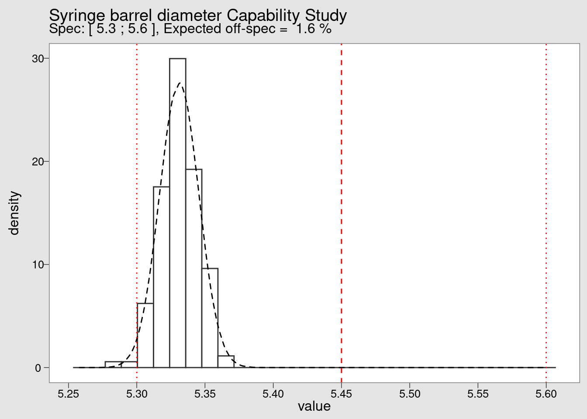

Statistical Process Control
Keeping the variability of an industrial process under control is one of the most important objectives in manufacturing. Based on expert knowledge or on detailed functional analysis the product and process parameters that are critical to quality are identified and selected for close follow-up. The most common and effective way for such follow-up is the Statistical Process Control which is done by using control charts.
Case study: Syringe injection molding
Pharmaceutical plastic injection is always a large scale manufacturing process with high speeds and tight specifications. Significant investments in clean rooms, fast automation and skilled operators require a commitment to the long term quality and a culture of excellence.

xbar-R charts
There are many types of control charts and in this case study we’re demonstrating the xbar and R charts. These two charts are often used together and are suited to the control the mean and the variability of a continuous variable. This case study draws on examples from Bass (2007) and from the {qcc} package vignette.
PH-parts is a plastic injection company specialized in high precision pharmaceutical Parts. In their catalog they have a mid-range product that sells in extremely high volumes: vaccination syringes. The inner diameter of the barrel has been identified in failure mode analysis as a critical dimension for the security of the operation. Following the implementation of a statistical process control (SPC) the production operators monitor the production process using xbar and R-charts. The protocol requires 6 samples are taken on an hourly basis and diameters simply typed in an excel file in a laptop by the injection press. A recent excel file with samples taken over a period of 25 hours of production has been loaded in R with the name syringe_diameter by the Quality Assistant of the lab.
head(syringe_diameter) %>%
kable()| Hour | Sample1 | Sample2 | Sample3 | Sample4 | Sample5 | Sample6 |
|---|---|---|---|---|---|---|
| Hour1 | 5.3314 | 5.3399 | 5.3244 | 5.3363 | 5.3228 | 5.3181 |
| Hour2 | 5.3240 | 5.3214 | 5.3142 | 5.3237 | 5.3420 | 5.3392 |
| Hour3 | 5.3263 | 5.3404 | 5.3136 | 5.3565 | 5.3387 | 5.3570 |
| Hour4 | 5.3553 | 5.3600 | 5.3171 | 5.3319 | 5.3446 | 5.3474 |
| Hour5 | 5.3379 | 5.3264 | 5.3150 | 5.3134 | 5.3375 | 5.3407 |
| Hour6 | 5.3432 | 5.3352 | 5.3238 | 5.3463 | 5.3340 | 5.3205 |
In this table each line corresponds to a sampling hour and each column corresponds to a sample number. We’re now going to pass this data to the control chart plotting function qcc() from the package with the same name. We choose to copy the dataset to a new one to remove the Hour column with the select function from tidyverse and we take the opportunity to round the values:
syringe_clean <- syringe_diameter %>%
select(-Hour) %>%
mutate(across(starts_with("S"), round, 2))In order to establish a control chart it is recommended to run a “calibration run.” The calibration run is used to calculate the control limits before entering “regular production.” Using the first 10 samples we call the qcc() function to make the required calculations.
Mean chart
library(qcc)syringe_xbar <- qcc(
syringe_clean[1:10, ],
type = "xbar",
title = "Syringe injection molding\n barrel diameter xbar chart (calibration)",
xlab = "Sample group",
plot = FALSE
)In the previous chink we’ve loaded the {qcc} package that has the required quality control tools and created a new variable data but before we plot the chart lets look a bit in detail in the calculations done in the background. A first step is to read the begining of the qcc() help file typing ?qcc in the console. It says "Create an object of class ‘qcc’ to perform statistical process control’ (in R technical terms function is a helper that generates an S3 R object). The key point here is that this means we can inspect the calculations separately from the plot itself. We can start by confirming the class and the type of the qcc object:
class(syringe_xbar)[1] "qcc"typeof(syringe_xbar)[1] "list"It is confirmed it is an object of class qcc with the type list. Looking into the structure of the list:
str(syringe_xbar)List of 11
$ call : language qcc(data = syringe_clean[1:10, ], type = "xbar", plot = FALSE, title = "Syringe injection molding\n barrel diamet| __truncated__
$ type : chr "xbar"
$ data.name : chr "syringe_clean[1:10, ]"
$ data : num [1:10, 1:6] 5.33 5.32 5.33 5.36 5.34 5.34 5.3 5.32 5.34 5.36 ...
..- attr(*, "dimnames")=List of 2
.. ..$ Group : chr [1:10] "1" "2" "3" "4" ...
.. ..$ Samples: chr [1:6] "Sample1" "Sample2" "Sample3" "Sample4" ...
$ statistics: Named num [1:10] 5.33 5.33 5.34 5.34 5.33 ...
..- attr(*, "names")= chr [1:10] "1" "2" "3" "4" ...
$ sizes : int [1:10] 6 6 6 6 6 6 6 6 6 6
$ center : num 5.33
$ std.dev : num 0.0142
$ nsigmas : num 3
$ limits : num [1, 1:2] 5.32 5.35
..- attr(*, "dimnames")=List of 2
.. ..$ : chr ""
.. ..$ : chr [1:2] "LCL" "UCL"
$ violations:List of 2
..$ beyond.limits : int(0)
..$ violating.runs: num(0)
- attr(*, "class")= chr "qcc"The output is not easy to read but we present it here just to show that inside the list there are several tables with the statistical analysis required for our plot. If we want like to see for instance the standard deviation we can extract it separately:
syringe_xbar$std.dev[1] 0.014207And if we want like to see a summary of all the data stored in the object we could apply the summary method:
summary(syringe_xbar)
Call:
qcc(data = syringe_clean[1:10, ], type = "xbar", plot = FALSE, title = "Syringe injection molding\n barrel diameter xbar chart (calibration)", xlab = "Sample group")
xbar chart for syringe_clean[1:10, ]
Summary of group statistics:
Min. 1st Qu. Median Mean 3rd Qu. Max.
5.3250 5.3283 5.3333 5.3333 5.3375 5.3433
Group sample size: 6
Number of groups: 10
Center of group statistics: 5.3333
Standard deviation: 0.014207
Control limits:
LCL UCL
5.3159 5.3507We are now ready to finally we can see this all together in a plot:
plot(syringe_xbar)
Range chart
syringe_R <- qcc(
syringe_clean[1:10, ],
type = "R",
title = "Syringe injection molding\n barrel diameter R chart (calibration)",
xlab = "Sample group"
)
Using the same 10 first samples we also obtained the corresponding R chart. Now that the calibration data has been plotted we can consider that the control limits are defined. They can become fixed and reused in new plots for the future production runs. Samples from those future runs can then be assessed against this limits and the control chart rules can be verified (in this example the shewhart rules are used). We now add the remaining data points to our chart by specifying which lines we’re referring too in our dataframe in the ‘newdata’ argument:
syringe_xbar <- qcc(
data = syringe_clean[1:10, ],
newdata = syringe_clean[11:25,],
type = "xbar",
title = "Syringe injection molding\n barrel diameter xbar chart (calibration)",
xlab = "Sample group"
)
We can see that the data point corresponding to the average of the measurements of the sample group 17 is plotted in red because it is outside of the control limits. Now we plot the R chart to assess the variability:
syringe_R <- qcc(
data = syringe_clean[1:10, ],
newdata = syringe_clean[11:25,],
type = "R",
title = "Syringe injection molding\n barrel diameter R chart (calibration)",
xlab = "Sample group"
)
In this case all the points are within the previously defined control limits. More tight controls can be put in place by clearly identifying warning limits in a narrower range than the control limits. These measures need to be accompanied by clear decision criteria and proper training to avoid the typical problem of overreacting and destabilizing the process by introducing unintended special causes of variation.
Warning limits
warn.limits <- limits.xbar(
syringe_xbar$center,
syringe_xbar$std.dev,
syringe_xbar$sizes,
2
)
plot(
syringe_xbar,
restore.par = FALSE,
title = "Syringe injection molding\n barrel diameter xbar chart",
xlab = "Sample group")
abline(h = warn.limits, lty = 3, col = viridis(12)[1])
The previous chunk exemplified how to add warning limits in the xbar chart and now we’re going to look into specifications. A manufacturing process under control has a variation that is lower than the product specifications and is ideally well centered. Therefore it is usually good practice to follow the control chart rules referring to the process control limits. In some cases Control Charts are even issued without the product specifications but in some cases there may an interest to add the specification limits. To to this we first we establish the specifications:
spec_max <- 5.6
spec_min <- 5.3
spec_tgt <- (spec_max - spec_min) / 2 + spec_min
specs <- c(spec_min, spec_tgt, spec_max)and the plot again the control chart with visible specification limits and targets:
plot(
syringe_xbar,
restore.par = FALSE,
title = "Syringe injection molding\n barrel diameter xbar chart (calibration)",
xlab = "Sample group",
ylim = c(specs[1], specs[3])
)
abline(h = specs, lty = 3, col = "red")
In our case study something has gone severely off track. The barrel diameter was considered under control but now when we added the specification limits we see a situation that sometime happens in practice and that requires action. The data plotted is still within the min max specification limits for this relatively small number of data points and the variation is overall well contained within the process limits but we see it is extremely off centered when compared with the product specification. A process capability study should help determining the causes for this off centering and help correcting it.
Cpk charts
In order to optimize the manufacturing process, the manufacturing engeering expert is going to assess the capability of the syringe injection diameter. Such details are not straight forward to modify. Should he request a change of some injection mold parts? Or play with process temperatures? Before moving to a process DOE he needs first to understand where he stands. We’re going to go more in depth in the study of the manufacturing process and make a comparison between the product specifications and the process variability. We’re looking for opportunities to tighten the product specifications. Tightening a product specification without increasing the cost of a manufacturing cost can be a very good source of competitive advantage. The way we are going to do this is by constructing an histogram and a density distribution of this process.
Off spec
off_spec <- function(UCL, LCL, mean, sd) {
round(100 - ((stats::pnorm(UCL, mean, sd) - stats::pnorm(LCL, mean, sd))*100), 2)
}This simple function off_spec() provides a probabilistic calculation of the number of parts that can be out of certain specification limits provided a certain sample mean, standard deviation and specification limits. This function is included in our package {industRial} and can accessed any time with industRial::off_spec. Now as a first step we’re going to calculate process parameters such as mean and standard deviation that we will use with the function. For this we put the data in a long format.
syringe_long <- syringe_diameter %>%
pivot_longer(cols = starts_with("Sample"),
names_to = "sample",
values_to = "value")
syringe_mean = syringe_long %>% pull(value) %>% mean()
syringe_sd = syringe_long %>% pull(value) %>% sd()
syringe_n <- length(syringe_long)and obtain:
syringe_off_spec <- off_spec(spec_max, spec_min, syringe_mean, syringe_sd)
syringe_off_spec[1] 1.59For our histogram we also want to obtain data for the density function. This can be calculated using the function rnorm() from the {stats} package using a reasonably high sample size. Here we use 100’000.
theor_n = 1000000
syringe_theor <- rnorm(n = theor_n, mean = syringe_mean, sd = syringe_sd) %>%
as_tibble()Now we prepare the legend of the chart using the variables created:
plot_subtitle <- paste(
"Spec: [", spec_min, ";", spec_max,
"], Expected off-spec = ",
signif(syringe_off_spec, digits = 2), "%"
)Note that we deliberately tweak the plot colors to make it look like the plots from minitab and from the {qcc} package. We provide this theme in the book companion package industRial with the name theme_qcc().
syringe_long %>%
ggplot(aes(x = value, y = ..density..)) +
geom_histogram(
bins = 30,
fill = "white",
color = "grey20") +
geom_density(data = syringe_theor, linetype = 2) +
geom_vline(xintercept = {spec_min}, color = "red", linetype = 3) +
geom_vline(xintercept = {spec_max}, color = "red", linetype = 3) +
geom_vline(xintercept = {spec_tgt}, color = "red", linetype = 2) +
scale_x_continuous(n.breaks = 10) +
theme_qcc() +
labs(
title = "Syringe barrel diameter Capability Study",
subtitle = {plot_subtitle})
By looking at the histogram we confirm the extreme off centering of the production. We also see that although there are no measurements beyond the lower specification limit (LSL) in the small sample of 25 values collected initially but in a high volume production the defect rate is very high. Defect rates typical in this industry will be not in the percentage but in the range of the ppm (parts per million).
Process Capability
process_Cpk <- function(UCL, LCL, mean, sd) {
pmin(
(abs(mean - abs(LCL)) / (3 * sd)),
(abs((abs(UCL) - mean)) / (3 * sd))
)
}The process_Cpk() is another function included in our package with which we can re-use the process variables calculated before to estimate the Cpk index:
process_Cpk(spec_max, spec_min, syringe_mean, syringe_sd)[1] 0.71587The Quality Management department expects to see Capability Reports in ppm and not in percentage To make such conversion we have to multiply by 10’000. Note that we’re not considering the 1.5 shift that sometimes is presented in the literature but rather making a simple direct conversion of the proportion out of spec found before:
formatC(((syringe_off_spec) * 10000), format = "d", big.mark = "'")[1] "15'900"As mentioned the expected population below the LSL is 1,3% which is very high for industry standards. In fact this corresponds to 15’900 parts per million (ppm) whereas a common target would be 1 ppm. Naturally these figures are indicative and they depend of the context criteria such as severity of the problem, cost, difficulty to eliminate the problem and so on. We are here going to establish a simple reference table using the functions created before, to present the expected percentage that falls within certain limits. To make it useful as a reference table we’re putting this limits from \(\pm\) 1 to \(\pm\) 6 standard deviations
Sigma conversion table
sigma_limits <- tibble(
sigma_plus = c(1, 2, 3, 4, 5, 6),
sigma_minus = -sigma_plus,
mean = 0,
sd = 1
)
sigma_limits %>%
mutate(
off_spec_perc = off_spec(sigma_plus, sigma_minus, mean, sd),
in_spec_perc = 100 - off_spec_perc,
Cpk = process_Cpk(sigma_plus, sigma_minus, mean, sd),
ppm_defects = formatC(
off_spec(sigma_plus, sigma_minus, mean, sd) * 10000,
format = "d",
big.mark = "'")) %>%
select(sigma_minus, sigma_plus, off_spec_perc, in_spec_perc, Cpk, ppm_defects) %>%
kable(align = "c", digits = 3)| sigma_minus | sigma_plus | off_spec_perc | in_spec_perc | Cpk | ppm_defects |
|---|---|---|---|---|---|
| -1 | 1 | 31.73 | 68.27 | 0.333 | 317’300 |
| -2 | 2 | 4.55 | 95.45 | 0.667 | 45’500 |
| -3 | 3 | 0.27 | 99.73 | 1.000 | 2’700 |
| -4 | 4 | 0.01 | 99.99 | 1.333 | 100 |
| -5 | 5 | 0.00 | 100.00 | 1.667 | 0 |
| -6 | 6 | 0.00 | 100.00 | 2.000 | 0 |
Capability chart
syringe_cpk <- process.capability(
syringe_xbar,
breaks = 10,
spec.limits = c(spec_min, spec_max),
target = spec_tgt,
digits = 2,
print = FALSE,
std.dev = syringe_sd
)
The previous plot shows how to obtain the capability chart and the different statistical variables in a quick and direct way with the {qcc} package. A fine tuning of the forecast of the number of expected parts out of specification can be done with the parameter std.dev. This input value will be used in the probability distribution function. Different approaches can be considered: calculating the standard deviation within each subgroup or the standard deviation of the entire population and also correcting the standard deviation dividing by n or by n - 1. In this example we re-use the standard deviation calculated on the entire set of datapoints as the group is small but for a case with more data it would be interesting to use the subgroups that tend to give smaller standard deviations.
The Quality Assistant has a much more clear idea where the process stands now. There’s a realignment of the process required of at least 0.1 mm. This may be at the limit of the process capability itself not to mention the uncertainty of measurement. Before over reacting he decides to look into the historical data and talk with the operators. Once it becomes clear this is a recurring pattern he will start looking into how to make such adjustment.
I-MR charts
This final unit of the book requires prior knowledge in creating R functions and reading code from existing R functions. It develops the topic of the development of custom functions for summary statistics and timeseries plotting. These functions are available on the book companion package {industRial} for exploration and further development. They don’t pretend to be used as such for real life applications as for that we recommend the functions from the package {qcc} presented before. In previous cases we’re already presented how to modify functions from other packages and here the objective here is to explore the creation of new functions from scratch.
We’re not presenting here the complete code for each function but instead encourage it be checked with the R functionality for function exploration. In R programming books and forums we see often the recommendation to read R source code and we can only support it as an excellent way to develop our skill set.
Lets start with the simple function off_spec() that calculates the percentage of parts out of specification given the specification limits, the process mean and standard deviation. This function was presented in the previous case study and since it is loaded in memory we can read its content with the R function body():
body(off_spec){
round(100 - ((stats::pnorm(UCL, mean, sd) - stats::pnorm(LCL,
mean, sd)) * 100), 2)
}we can see that it uses simple functions from the package {stats}. We can also explicitly request to see the arguments it takes with dput(formals()):
dput(formals(off_spec))as.pairlist(alist(UCL = , LCL = , mean = , sd = ))and for a complete review we can open the function help page with:
?off_specLets give some data and use the function:
off_spec(0.981, 0.819, 0.943, 0.019)[1] 2.28we get 2.28% parts out of spec. We’ll see this calculation in action in a moment.
Process statistics
tablet_weight <- tablet_weight %>%
janitor::clean_names(case = "snake")
tablet_weight %>%
head(3) %>%
kable()| part_id | weight_target_value | weight_value |
|---|---|---|
| 1001 | 0.9 | 0.84556 |
| 1002 | 0.9 | 0.91444 |
| 1003 | 0.9 | 0.90111 |
We’re now going to use the function process_stats() to calculate several statistical data for this dataset. This function returs a high number of outputs is large as we can see below:
weight_statistics_data <- process_stats(tablet_weight, 10)
names(weight_statistics_data) [1] "part_id" "weight_target_value" "weight_value"
[4] "part_spec_percent" "spec_min" "spec_max"
[7] "weight_mean" "weight_sd" "weight_out_perc"
[10] "Cpk" "weight_MR" "weight_MR_mean"
[13] "MR_max" "R_out_limits" "I_LCL"
[16] "I_UCL" "weight_out_limits" Exploring the details on how the function calculates all the process statistics we have:
body(process_stats){
process_data <- data %>% dplyr::filter(!is.na(.data$weight_value),
.data$weight_value >= 0) %>% dplyr::group_by(.data$weight_target_value) %>%
dplyr::mutate(part_spec_percent = part_spec_percent,
spec_min = .data$weight_target_value - .data$weight_target_value *
part_spec_percent/100, spec_max = .data$weight_target_value +
.data$weight_target_value * part_spec_percent/100,
weight_mean = mean(.data$weight_value), weight_sd = stats::sd(.data$weight_value))
process_data <- process_data %>% dplyr::mutate(weight_out_perc = industRial::off_spec(process_data$spec_max,
process_data$spec_min, process_data$weight_mean, process_data$weight_sd),
Cpk = industRial::process_Cpk(process_data$spec_max,
process_data$spec_min, process_data$weight_mean,
process_data$weight_sd), weight_MR = abs(.data$weight_value -
dplyr::lag(.data$weight_value)))
process_data <- process_data %>% dplyr::mutate(weight_MR_mean = mean(process_data$weight_MR,
na.rm = TRUE))
process_data <- process_data %>% dplyr::mutate(MR_max = 3.688 *
process_data$weight_MR_mean)
process_data <- process_data %>% dplyr::mutate(R_out_limits = dplyr::if_else(condition = process_data$weight_MR >
process_data$MR_max, process_data$weight_MR, NA_real_),
I_LCL = round((process_data$weight_mean - 2.66 * process_data$weight_MR_mean),
2), I_UCL = round((process_data$weight_mean + 2.66 *
process_data$weight_MR_mean), 2))
process_data <- process_data %>% dplyr::mutate(weight_out_limits = dplyr::if_else(condition = (.data$weight_value >
process_data$I_UCL | .data$weight_value < process_data$I_LCL),
.data$weight_value, false = NA_real_))
}This being done we can now convert this data into an easy readable format for reporting of for a future integration in a shiny app for example. We’re exploring now the package {gt} that has a specific very neat look rather different from the {kable} package that has been the most used until now.
process_stats_table(weight_statistics_data)| Process Summary Statistics | ||
|---|---|---|
| Variable | Value | Unit |
| Weight mean | 0.94000 | g |
| Spec target | 0.90000 | g |
| Spec min | 0.81000 | g |
| Spec max | 0.99000 | g |
| Out of spec | 0.71000 | % |
| Cpk | 0.81785 | |
| Sample size | 137 | parts |
Individual chart
chart_I(weight_statistics_data)
Once the data set is available we’re feeding it into the chart_I() function. This is another function from the package that can be used as a starting point for explorations in SPC charts. It is built using {ggplot2} and another examples can be seen in the tutorials section.
Moving range chart
chart_IMR(weight_statistics_data)
The companion of the I chart is the MR chart, where MR stands for moving range.
Capability chart (custom)
chart_Cpk(weight_statistics_data)
and this final chart presented a process capability histogram obtained with the function chart_Cpk().